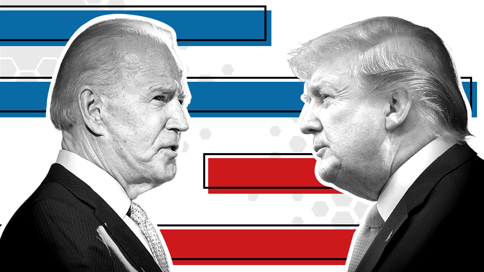

United States Presidential Election 2020
The 2020 United States presidential debates between Joe Biden and Donald Trump, the major candidates in the 2020 United States presidential election, were sponsored by the Commission on Presidential Debates. The first debate took place on September 29, 2020. The next debate was scheduled to take place on October 15 but was later canceled due to Trump's COVID-19 diagnosis and refusal to appear remotely rather than in person. As a result, 2020 had the fewest debates since 1996. The final debate took place on October 22.
The second debate was scheduled to take place on Thursday, October 15, 2020 in Miami. This debate had originally been scheduled to be held at the Crisler Center at the University of Michigan in Ann Arbor, Michigan, but the University of Michigan withdrew as a host on June 23, 2020, over public health concerns stemming from the COVID-19 pandemic.
On the morning of October 2, the White House press office announced that the president had contracted COVID-19. One of his close advisers, Hope Hicks, had shown symptoms on the plane while returning from the first debate, and subsequently tested positive. Trump, along with First Lady Melania Trump, tested positive shortly afterwards and went into quarantine. The president was hospitalized for three days.[ The second debate would have been within the CDC's recommended quarantine period of two weeks. The Commission on Presidential Debates did not immediately specify if Trump's diagnosis would affect the second debate.
Trump's physician Sean Conley said on October 8 that Trump's condition was stable and that he was "devoid of symptoms"; however, that evening Trump appeared by phone on Hannity and suffered several coughing fits. Conley said that he anticipated that Trump could have a "safe return to public engagements" by October 10, ten days after his diagnosis. However, Trump's treatment using remdesivir and dexamethasone was typical of a severe case.
The commission announced on October 9 that the second debate had been canceled while the final debate would still proceed as originally planned. As a result of the debate cancellation, each candidate participated in separate town hall events televised at the same time. More people watched Biden's town hall, broadcast solely on ABC, than Trump's town hall, broadcast on NBC.